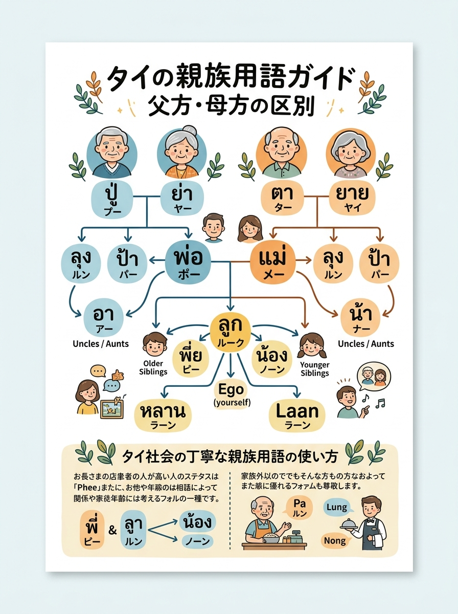
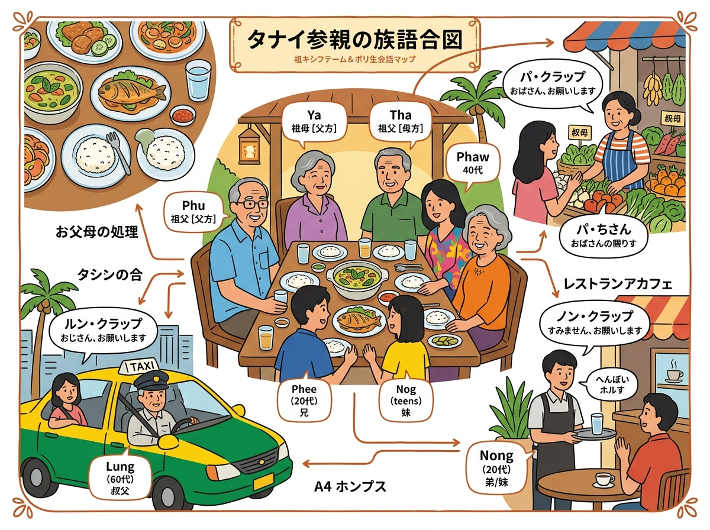

01
父方の祖父
ปู่
💡 補足・ニュアンス
父の実父（พ่อของพ่อ）。タイ語では父方・母方の祖父母を包括する単一単語はなく完全分離。祖父世代の男性への敬称にも使用。
父方の祖父（プー）と母方の祖父（ター）など、親族を細かく区別するタイ語の呼称一覧。
クリックすると拡大して詳細を確認・印刷できます。

旅行者の持ち歩き・印刷に適した手書き風インフォグラフィック。

位置関係やルート、全体像を俯瞰できるワイドデザイン。
現地調査および公的データに基づく最新詳細情報。
ปู่
父の実父（พ่อของพ่อ）。タイ語では父方・母方の祖父母を包括する単一単語はなく完全分離。祖父世代の男性への敬称にも使用。
ย่า
父の実母（แม่ของพ่อ）。祖母世代の高齢女性への敬称にも使用。
ตา
母の実父（พ่อของแม่）。日常会話で親しみのある高齢男性への呼びかけ（親称・敬称）にも頻繁に使われる。
ยาย
母の実母（แม่ของแม่）。日常会話で親しみのある高齢女性への呼びかけ（親称・敬称）にも頻繁に使われる。
ลุง
父または母の実兄（男女共通で親より年上）。街中や屋台の親世代の年配男性への親しみある敬称。
ป้า
父または母の実姉（男女共通で親より年上）。街中や市場の親世代の年配女性店主への親しみある敬称。
อา
父の実弟・実妹（男女共通で父より年下）。性別を分ける場合はアー・プーチャーイ（叔父）/アー・プーイン（叔母）。
น้า
母の実弟・実妹（男女共通で母より年下）。親族呼称の中で最も親しみやすい響きを持つ。
พ่อ
実父。父親代わりの年長者やキリスト教神父への敬称にも使用。
แม่
実母。母親代わりの年長者や寮母、市場の女性への親愛を込めた呼びかけにも使用。
พี่ (พี่ชาย / พี่สาว)
年上の兄弟姉妹。タイ社会で最も頻繁に用いられる敬称・親称で、年上の同僚や先輩・店員への丁寧な呼びかけ。
น้อง (น้องชาย / น้องสาว)
年下の兄弟姉妹。年下の同僚や後輩、レストランやカフェの若い店員への友好的な呼びかけ。